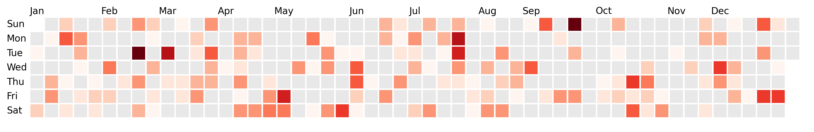

A simple-to-use Python library to build calendar heatmaps with ease. It's built on top of matplotlib and leverages it to access high customization possibilities. They can even be interactive!
importmatplotlib.pyplotaspltimportdayplotasdpdf=dp.load_dataset("pandas")# can also be "polars", "pyarrow", etcfig,ax=plt.subplots(figsize=(15,6))dp.calendar(dates=df["dates"],values=df["values"],start_date="2024-01-01",end_date="2024-12-31",ax=ax,)

importmatplotlib.pyplotaspltimportdayplotasdpdf=dp.load_dataset("pandas")fig,ax=plt.subplots(figsize=(15,6))dp.calendar(dates=df["dates"],values=df["values"],cmap="Reds",# any matplotlib colormapstart_date="2024-01-01",end_date="2024-12-31",ax=ax,)